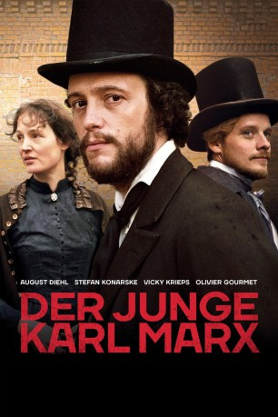
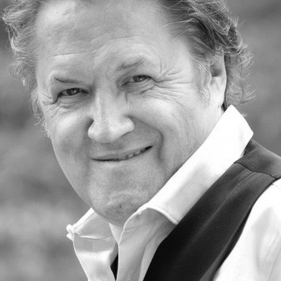
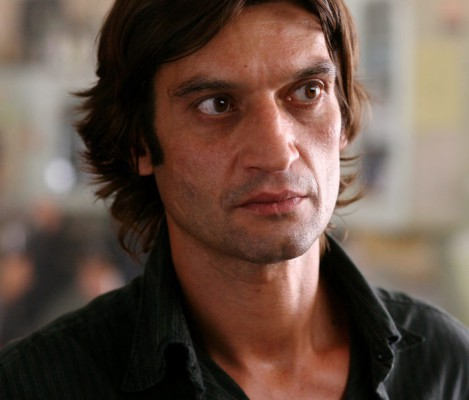
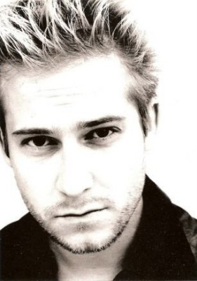
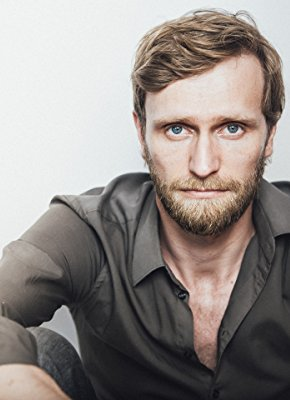
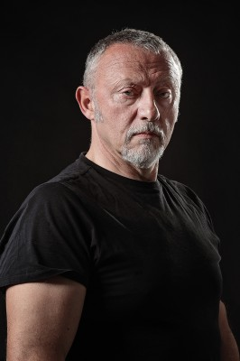
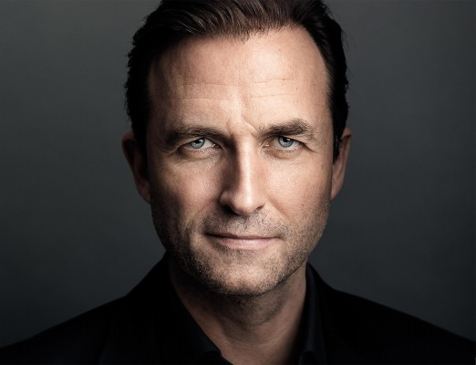
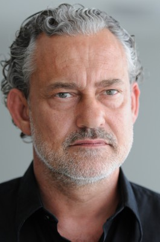
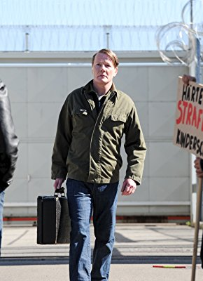

#7383 Der Junge Karl Marx
Alternativ: The Young Karl Marx (Englischer Titel)
 
 IMDB-Wertung: 6.6 / 10
IMDB-Wertung: 6.6 / 10  Metascore: 62
Metascore: 62 
Der junge Karl Marx hat sein deutsches Heimatland im Jahr 1844 bereits verlassen und ist mit seiner Frau Jenny von Westphalen nach Paris ins Exil gegangen. Hier begegnet der 26-Jährige schließlich dem jungen Fabrikantensohn Friedrich Engels der Marx' Ansichten zum Proletariat teilt und sich sehr für die in England gerade massiv voranschreitende industrielle Revolution interessiert. Gemeinsam entgehen die zwei neuen Freunde immer wieder Polizei-Durchsuchungen, setzen sich über Verbote und Zensur hinweg und halten ihr Idealbild vom politischen Wandel der Machtverhältnisse im Grundbaustein ihrer kommunistischen Lehre fest.
Jahr: 2017
Dauer: 118 Minuten
FSK: 6
Land: Deutschland Studio: Neue Visionen FilmverleihTonspuren:
Untertitel: Deutsch,
Auflösung: 1080p (1920x808) Größe: 9687 MB
Genre: Drama, Geschichte, Biographie
Regisseur: Raoul Peck
Drehbuch: Pascal Bonitzer
Soundtrack:
Darsteller:
 August Diehl als Karl Marx
August Diehl als Karl Marx Vicky Krieps als Jenny von Westphalen-Marx
Vicky Krieps als Jenny von Westphalen-Marx Olivier Gourmet als Pierre-Joseph Proudhon
Olivier Gourmet als Pierre-Joseph Proudhon- Hannah Steele als Mary Burns
 Alexander Scheer als Wilhelm Weitling
Alexander Scheer als Wilhelm Weitling-  Michael Brandner als Joseph Moll
-  Ivan Franek als Mikhail Aleksandrovich Bakunin
-  Niels-Bruno Schmidt als Karl Grün
-  Ulrich Brandhoff als Herrmann Kriege
-  Eric Godon als Foreman
-  Stephen Hogan als Thomas Naylor
- Inga R. Kammerer als Old Woman
-  Rolf Kanies als Moses Hess
- Denis Lyons als James
- Elsa Mollien als Sybille Hess
-  Torsten Ranft als
- Ernesto 'Che' Guevara als Himself , archive footage, uncredited
 John F. Kennedy als Himself , archive footage, uncredited
John F. Kennedy als Himself , archive footage, uncredited- Nelson Mandela als Himself , archive footage, uncredited
 Ronald Reagan als Himself , archive footage, uncredited
Ronald Reagan als Himself , archive footage, uncredited- Margaret Thatcher als Herself , archive footage, uncredited
- Stefan Konarske als Friedrich Engels
- Hans-Uwe Bauer als Arnold Ruge
- Peter Benedict als Herr Engels
- Marie Meinzenbach als Lenchen
- Wiebke Adam als Frau Ruge
- Aran Bertetto als Paddy
- Nikita Khrushchev als Himself , archive footage
- Pascal Lalo als L'orateur Louis Blanc
- Annabelle Lewiston als Lizzy Burns
- Damien Marchal als Pavel Annenkov
- Jürgen Rißmann als
Datei: X:\2017(G-M)\Junge Karl Marx, Der (2017, FSK6, 1920x808).mkv seit 08.11.2017
Festplatte: HD 2017(A-Z)-2018(A-F)
 Es gibt insgesamt 148 Filme in der Gruppe '2017(G-M)'
Es gibt insgesamt 148 Filme in der Gruppe '2017(G-M)'